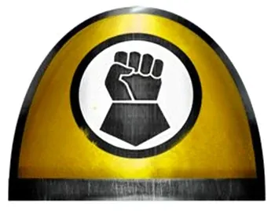
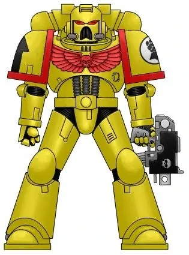
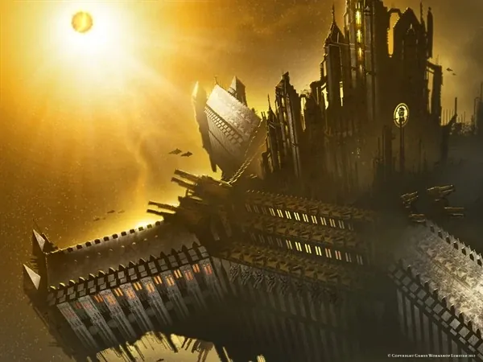
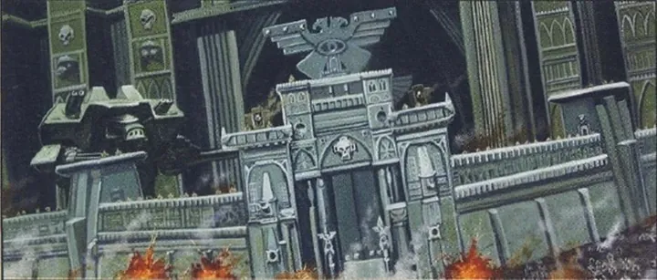
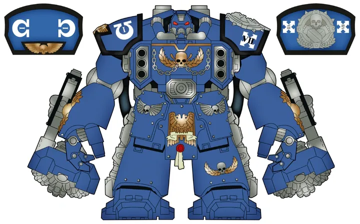

01ภาพรวม

ผู้พิทักษ์แห่ง Terra — ปรมาจารย์การป้องกันและการปิดล้อม บนป้อมอวกาศ Phalanx
02ต้นกำเนิด
Legion ที่ 7 ภายใต้ Rogal Dorn จากดาวน้ำแข็ง Inwit ได้รับยานป้อม Phalanx เป็นฐาน และถูกเรียกกลับมาเสริมป้อมพระราชวังก่อน Heresy
03เนื้อเรื่องเจาะลึก
Dorn และกำแพงแห่ง Terra
Rogal Dorn ถูกพบบนดาวน้ำแข็ง Inwit และเป็นที่รู้จักเรื่องความซื่อตรงและความดื้อดึง จักรพรรดิมอบหน้าที่เสริมป้อมพระราชวังบน Terra ให้เขา เมื่อ Horus บุก Terra กำแพงที่ Dorn สร้างยื้อศัตรูไว้นานพอให้จักรพรรดิเผชิญหน้า Horus ได้
คู่แค้นหมื่นปี: Iron Warriors
Perturabo แห่ง Iron Warriors อิจฉาที่ Dorn ได้รับยกย่องว่าเป็นผู้สร้างป้อมที่ดีที่สุด ขณะที่ตัวเขาถูกใช้ในงานสกปรก ความแค้นนี้ทำให้สอง Legion เป็นศัตรูคู่ปรับจนถึงทุกวันนี้
การล่มสลายและการเกิดใหม่
ในสงคราม War of the Beast (M32) Imperial Fists เกือบถูก Orks ทำลายทั้ง Chapter จนต้องให้ Chapter ลูกหลาน (Fists Exemplar) ร่วมกันสร้างขึ้นใหม่ — ครั้งเดียวที่ Chapter ต้นแบบต้องพึ่งลูกหลานของตัวเอง
04ยุค 30K — ในยุค Great Crusade และ Horus Heresy

ยุค 30K เป็นผู้ป้องกันหลักของ Terra ในการปิดล้อม หลังสงครามพ่ายในกับดัก Iron Cage ของ Perturabo และมีข้อพิพาทเรื่องการแบ่ง Legion จน Chapter ทายาทอย่าง Black Templars และ Crimson Fists แยกตัวไป
ดูภาพรวมยุค 30K ทั้งหมดที่ เนื้อเรื่องยุค 30K และความต่างของสองยุคที่ เปรียบเทียบ 30K vs 40K
05นิสัยและวัฒนธรรม
- อดทน มุ่งมั่น และภูมิใจในการ 'ยืนหยัดไม่ถอย'
- ฝึกความอดทนด้วยความเจ็บปวด
- แข่งขันและเกลียดชัง Iron Warriors มาหมื่นปี
06จุดที่น่าสนใจ
- Phalanx ลอยอยู่เหนือ Terra เป็นส่วนใหญ่
- กระดูกมือของ Rogal Dorn เก็บรักษาเป็นพระธาตุ
- Chapter ทายาทที่โด่งดัง: Crimson Fists, Black Templars
07ความสามารถพิเศษ
สิ่งที่ทำให้ Imperial Fists แตกต่างจากทัพอื่น — ทั้งพลังที่ติดตัวมาทั้งเผ่า/ทัพ และความสามารถของบุคคลสำคัญ
ของทั้งเผ่า/ทัพ

ผู้เชี่ยวชาญการสร้างและทลายป้อม
สืบทอดจาก Rogal Dorn ผู้สร้างกำแพงพระราชวังบน Terra ทหารทุกนายเรียนวิศวกรรมการปิดล้อม ทั้งการสร้างแนวป้องกันที่ทำลายยากที่สุดและการหาจุดอ่อนของป้อมศัตรู

ความอดทนเหนือขีดจำกัด
ขึ้นชื่อเรื่อง "ยืนหยัดจนตัวตาย" ไม่ถอยแม้ถูกล้อม ฝึกความอดทนด้วย Pain Glove ถุงมือที่ส่งความเจ็บปวดสุดขีด

ปืน Bolter ที่แม่นที่สุด
Imperial Fists ถือว่าการยิง Bolter เป็นศิลปะ ฝึก "Bolter Drill" จนยิงประสานกันได้อย่างแม่นยำ ทำลายศัตรูทีละแถว

ป้อม Phalanx
ป้อมอวกาศขนาดดวงจันทร์ที่เป็นทั้งบ้านและฐานทัพ เคลื่อนที่ข้ามดาวได้ เป็นหนึ่งในโบราณวัตถุยิ่งใหญ่จากยุค Great Crusade
ของบุคคลสำคัญ

Darnath Lysander
Captain of the FirstFirst Captain ผู้เคยถูก Iron Warriors จับไปขังและทรมาน แต่หนีออกมาได้ ถือค้อน Fist of Dorn และโล่ Storm Shield เป็นผู้นำ Terminator ที่แข็งแกร่งที่สุดของ Chapter

Tor Garadon
กัปตันกองร้อยที่ 3ผู้เชี่ยวชาญการปิดล้อมที่ใช้แขนกล Hand of Defiance และปืน Grav-gun ทำลายเกราะหนาและกำแพงป้อมได้

Pedro Kantor
Chapter Master of Crimson FistsChapter ลูกหลานที่เกือบถูกทำลายหมดใน Rynn's World เมื่อระบบป้องกันของตัวเองระเบิด Kantor รบใต้ดินกับ Ork นานหลายเดือนจนกู้ Chapter คืน
08หน่วยและบทบาทในกองทัพ
Imperial Fists ทำตาม Codex อย่างเคร่งครัด แต่เชี่ยวชาญการสร้างและทำลายป้อมปราการที่สุดในจักรวรรดิ ทหารทุกนายถูกฝึกให้เป็นวิศวกรสงครามด้วย

Siege Master
ผู้เชี่ยวชาญการปิดล้อมทหารทุกนายของ Imperial Fists เรียนการสร้างแนวป้องกันและการเจาะป้อม — สืบทอดจาก Rogal Dorn ผู้สร้างกำแพงพระราชวังบน Terra

Centurion
เซนทูเรียนชุดเกราะ Centurion Warsuit ที่สวมทับเกราะปกติ ใช้เจาะกำแพงและยิงป้อม Imperial Fists ใช้มากกว่า Chapter ใดๆ
Pain Glove
ถุงมือแห่งความเจ็บปวดพิธีกรรมทดสอบใจ ทหารสวมถุงมือที่ปล่อยความเจ็บปวดสุดขีด ใช้เป็นทั้งการฝึกและการไถ่บาป
Phalanx
ฟาลังซ์ป้อมปราการอวกาศขนาดเท่าดวงจันทร์ เป็นทั้งฐานทัพและบ้านของ Chapter ตั้งแต่ยุค Horus Heresy
ตำแหน่งมาตรฐานของ Space Marine (Captain, Apothecary, Techmarine ฯลฯ) ดูได้ที่ หน่วยและบทบาทของ Space Marines และกฎการจัดองค์กรที่ Codex Astartes
09วีรกรรมและเหตุการณ์สำคัญ
Siege of Terra
ป้องกันพระราชวังจากทัพผู้ทรยศ
War of the Beast
Chapter เกือบถูก Orks กวาดล้าง — จุดกำเนิดของ Deathwatch
ปกป้อง Segmentum Solar
ยึดดาวคืนหลังการเกิด Great Rift
10ตัวละครสำคัญ

Rogal Dorn
Primarch (เสียชีวิตตามบันทึก)ผู้พิทักษ์แห่ง Terra
11ยุค 40K — สหัสวรรษที่ 41
ยุค 40K Imperial Fists ยังเป็นผู้เชี่ยวชาญการป้องกันและปิดล้อม เข้าร่วมศึกสำคัญทั่วกาแล็กซี
12เนื้อเรื่องล่าสุด (Era Indomitus / M42)
มองจักรวรรดิเหมือนป้อมขนาดยักษ์ รบทั้งตั้งรับและรุกยึดดาวคืน ขณะที่ Phalanx เฝ้า Segmentum Solar
หลังการเกิด Great Rift ปฏิทินของจักรวรรดิคลาดเคลื่อน เหตุการณ์ยุคปัจจุบันจึงมักระบุเพียง 'M42' ไม่มีปีที่แน่นอน
13แกลเลอรี